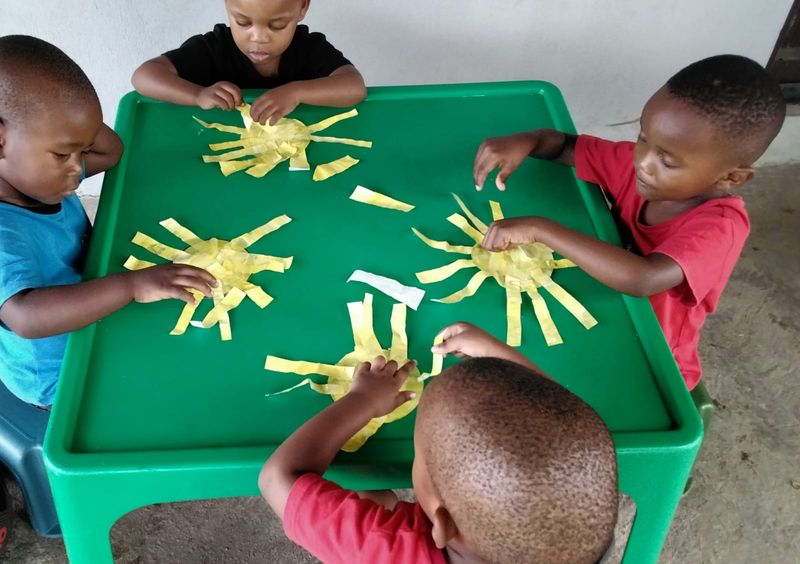
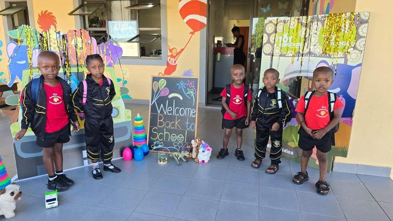
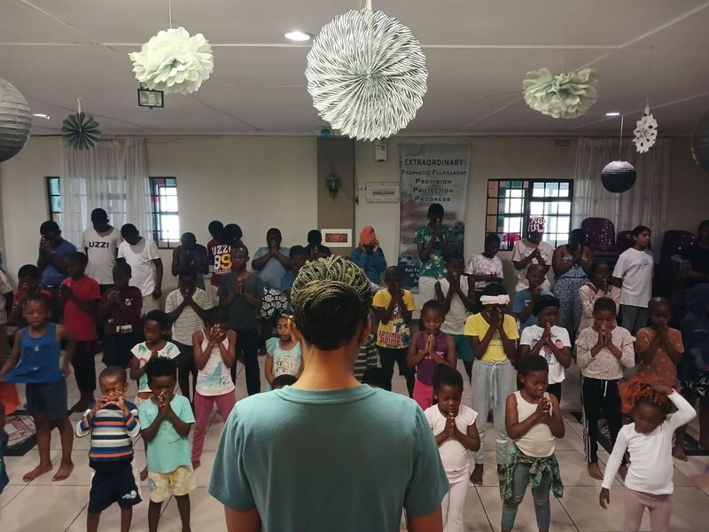
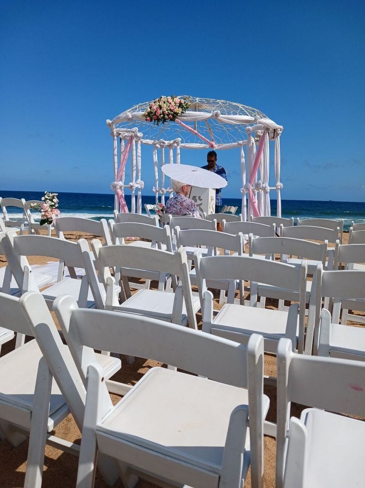
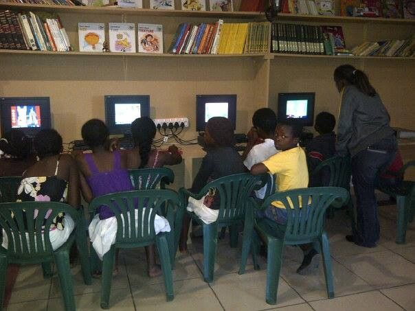
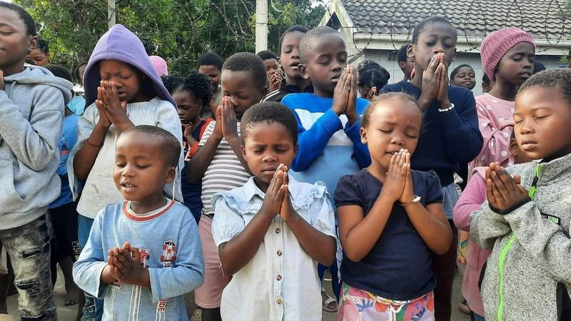
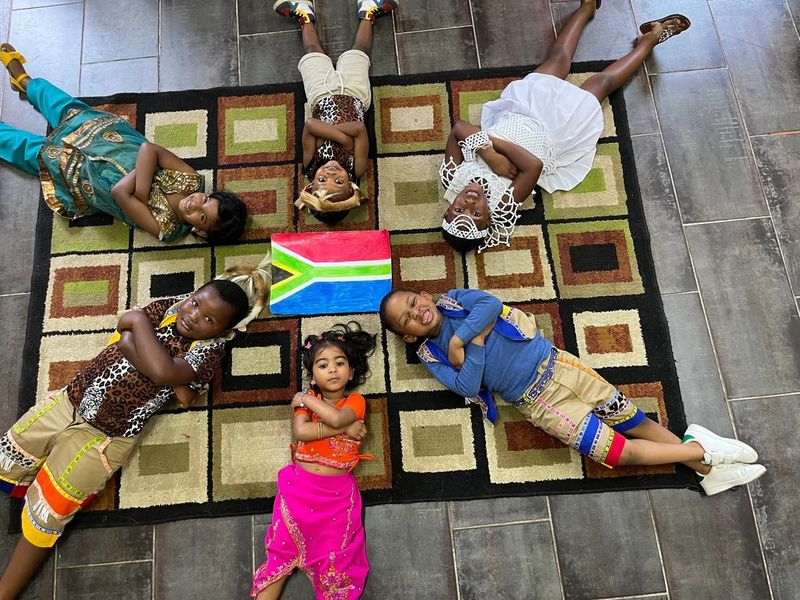

Preschool: Breakthrough Centre Academy
An ECD centre in Groutville since 2005. Your child learns Maths, Science, Languages and Life Skills, and starts reading with our "I can read" programme.
Since 1990 we've been a safe, hopeful place for the children and families of Etete. Little ones learn to read and count at our Academy, children come together every Sunday at Kidz Club, and families across KwaDukuza and the North Coast find a helping hand when they need it.
On 10 October 1990 a handful of children met in a borrowed classroom in Etete. That club never stopped. It moved into a small house, then a tent, and today it's a full community centre with its own preschool, Breakthrough Centre Academy, where children from the age of two learn to read, count and speak up with confidence.
We're a registered non-profit organisation (081-061-NPO) in Groutville, between KwaDukuza (Stanger) and Ballito, and we serve families right across the iLembe District. What drives us hasn't changed in 36 years: helping people of every age reach their God-given potential.

Everyone who serves at Breakthrough Centre commits to:
A preschool, a Sunday club, community projects, weddings, training and a listening ear, all at one address in Etete.

An ECD centre in Groutville since 2005. Your child learns Maths, Science, Languages and Life Skills, and starts reading with our "I can read" programme.

Every Sunday from 8 to 10am. Praise and worship, a Bible story, soccer, games and a lot of encouragement, with Larry the puppet never far away.

Our yearly Child Protection event, blankets and food parcels, feeding schemes, school shoes, Christmas outreach and Jumpstart work readiness.

A personal ceremony on the beach, in a hall or wherever you choose, and we register your marriage with Home Affairs.

Practical workshops, leadership and mentoring for parents, teachers, young people and community groups.

Going through something hard? Talk to someone who will listen, pray with you and walk with you.
How do you change the world?
By touching one little life at a time. Give an hour, share a skill, partner with us or simply come and visit. There's a place for you here.

We're at 170 Old Main Road, Etete, Groutville, Dolphin Coast, KwaZulu-Natal, in Groutville between KwaDukuza (Stanger) and Ballito on the KwaZulu-Natal North Coast. Get directions.
Breakthrough Centre Academy welcomes children from the age of two. See what they learn.
Send a WhatsApp to 081 775 1488 and we'll tell you about places and registration.
Every Sunday from 8 to 10am at the centre. All children in the community are welcome.
Yes. We're a registered non-profit organisation, number 081-061-NPO, and we've served Etete since 1990.